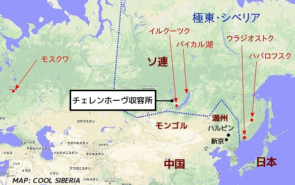

戦后、五十五年が過ぎようとしている、シベリヤ抑留問題は正に風化しようとしている。すべての国際懸案は引きつぐと声明したロシアからは何の挨拶もない。 ナチのユダヤ殺りくに比すべき、この暴虐は風化させてはならない。 事実を知っている者も大方故人になっている。 出来るだけ冷静に事実を書いておきたい。
終戦九月も下旬のある日、ソ連側将校三名が、当時の新京興亜街の私の宿舎に来て、少しきゝたいことがあるといって連行、途中、協和会総務部長 武岡氏と中央本部長 結城氏なども加えて、元海軍武官府に収容、見ると満州国の要人、関東軍のお歴々などがいる。
これは永くなるなとは思ったが、別にわるいことはしていないし、当時私は軍人ではないからまさか五年の苦役になるとは、全く思っていなかった。 取り調べは約ーヶ月の間に数回あったが、そう突込んだ話はなかった。拷問などはなかった。 しかし中には蒼白になってぐったりして帰ってくる人もいた。
私はこゝで印象に残っていることがある。 背の高いがっしりした体格の四〇歳位の独乙(ドイツ)大使館書記官であった。 可成り厳しい調べを徹夜でやられたりして、フラフラになって帰って来てはいたが、私に「ゲルマンはこれで二回ロシアに負けたが、吾々は必ずスラブをやっつける。日本は初めてではないか、みんながんばれ」と言って、私に腕相撲などを挑戦してきたことである。 私は昨日まで参謀肩章などを吊って威張っていた関東軍の将校のおろおろした様子と比べてさすがと思った。
寝具はなかったが、金さえ使えば差し入れがきいた。 だんだん寒くなる頃、私には妻が矢絣(やがすり)の紫の着物で作ってくれた細長い布団を入れてくれて助かったが、これはシベリヤでパンに化けた。
十一月に入ったある日、トラックに乗せられたので釈放かなと思ったが、そのまま自分がそこで二年間教官として働いていた大同学院に入れられた。 皮肉な因縁を感じた。 見ると顔見知りが沢山いて、やあやあということになった。 この頃はまだみな元気で、中には差し入れのどてらなどを着込んで碁などを打っている先輩もいた。
ここはいわゆる輸送基地にしていたのだ。 鉄条網を二重に張ってあったが、脱走を企てた者が犬ころのように射たれてひっかかったままになっていた。 私たちは捕虜とは敗戦国軍隊の軍人及び軍属等、直接軍のために働いた者だけと思っていたから、まさかシベリヤに送られるとは思っていなかった。 事実、全く商人として、または飲屋の主人、大工まで民間人が沢山いた。 従って夫々、まとめて日本に帰国させるのだろう位にみな考えていた。 まことにおめでたい話である。
ついに私も亡国の国都の駅から貨車に詰め込まれて北に向かった。 それでもハルピンから東行して、清津あたりから帰国させるのだろう位に考えていた。 翌朝、ハルピンで西に向き走り出したので動揺が車内におきた。
食事が不足で一日に一度だけ。 国境はもう雪だったが、ダルマストーブの石炭が少ないので困った。 貨車の羽目にいた人は左足が凍傷になり、収容されてから切断手術をしたが、結局死亡した。 一番困ったのは水。 牛を運ぶにも水は与えるのに、これが不足で「ワダー(水)ワダー」の声が暗い貨車の中でうめきのようにもれ出した。
ある夜、大きな街に入った。 イルクーツクだ。 ここで入浴ということになったが、これは入浴よりも流行りだした発疹チフス防除のための衣服の熱気消毒が主目的であった。 ろくに食べていない体にむし風呂なので、のびてしまってあわてて水をかけたりした。 また途中、道端の雪をむさぼるように食ったが、明るくなったら炭塵で真っ黒くなっていた。
こうしてまた一日ほど走って荒涼たる原野に下車した。 もう足がからんで雪の上を這うように入れられたところが、いわゆるチェレンホーヴ収容所で一帯は炭鉱地帯である。 私の五年間の苦役の出発である。 以下日を追って書くよりも、生活の態様を項目別に書くことにする。
二重の鉄条網に囲まれた原野の中に八棟のバラック、半地下のものもあった。 急造で床など生木で凍っていた。 体温でとけて毛布がベトベトになったが、石炭はお手のものだから氷のベットは間もなく解決、棚は二段または三段、三段のところは座ると頭がつかえる。 縦2m、巾60cm位が一人分、窓にはガラスのないのがあるので板や紙を貼ったりした。
便所は壕のように板が渡してあるだけ、扉などはない、用便中にたばこの火を借りたりする。 棟によっては百米もはなれていた。 栄養失調と寒さで小便が近くなり、ねぼけ眼で雪に足をとられながら通うので途中でやってしまう。 明るくなると黄色の穴が沢山出来るので監視が立つようになったが、監視自身もやるから余り効果はなかった。 私は二、三回収容所を移動したが、大体似たようなものであった。
動物にとって、人間にとって、そして捕虜にとっては、最も決定的な条件。
初めのうちは時々欠食の日があったが、これは間もなく解消した。 ー日分、黒パン(材料は多分、粟とか高粱(タカキビ)の粉、魚、芋など)三百グラム(坑内のさき山は四百)、かゆ(えん麦、粟、高粱など)飯盒(はんごう)の二分の一位三食、副食はなし、ソ連側の説明では魚肉などかゆの中とあったが余り見かけなかった。
私はある時、食糧倉庫をのぞいたら黒い山羊の頭が山のように積んであった。 黒パンは湿気が多く重いのでガサは煉瓦(レンガ)一個位、建前は百グラム宛、三回に食べるのだろうが、みんな一度に食べてしまう、あとはかゆばかり。
ある人が「食事をとるとかえって空腹になる」と言ったが、僅かな食のために胃が活動するからだろう。 まるで餓鬼、端的な例をあげると、朝パンが一本上がる(五人分)これを切り分けるのだが、切り手の手元を八つの眼玉が見すえている、その眼のすごさ。 公平を期してものさしや秤をつくったりする組もあった。
往年の閣下が炊事の溝から黒くなった芋を拾ったり、空腹で頭がおかしくなって、隣のパンを堂々と食ってなぐられたり、 ヴィタミン補給と言って野菜のあかざ(藜)を食いすぎて下痢するようなこともあった。 すしを握る手つきをして生つばを飲みこむような日常であった。
一方では滑稽と言うか、主食なしで塩鮭一本を一人分としてくれたりする。 これはソ側の担当者の事務的無能に起因するので、時々、検査宮が来て在庫と支給状態を調べるので、あわててかくしていた鮭を処分するためにおこることで、迷惑なのは私たちである。 ソ側の職員が堂々と一匹ぶら下げて帰るのをよく見かけた。捕虜のピンハネである。
作業というには、あまりに酷薄な労役であった。 それは鞭をもって馬を追うよりもひどい処遇だった。 この労働者の祖国には作業に関する作文はあったが、それは現実の苦役とは全く関係がなかった。 ノルマというものが綿密に出来ていて、例えば穴を掘る場合、土質が粘土か石まじりかなど、細かな条件が設定されてはいるが、現実は全く作文である。
炭鉱の実情で言えば、各鉱区にナチャルニック(監督)がいて、彼等にとっては指示された炭量が決定的な重さで要求される。 達成されないと、翌日はシャベルをかついで一ラポーチ(労働者)として炭を掘らなくてはならない。 従って私たちに強引に要求する。たとえばその鉱区は水が多く湧き出して、水浸しになって掘っても量が出ないことや、炭層が薄く量が出ないことがあっても、まず手加減はない。 八時間労働は十二時間労働になることもあった。 しかしこれは後に多少是正されるようにはなった。
作業隊の編成については、採炭は24時間稼働するので、三区分になる。 一番立ちは8時から16時、二番立ちは16時から24時、三番立ちは0時から翌日8時まで、この三番立ちというのがつらい。 朝帰っても宿舎はおなじだし食事時間も一律だからよく眠れない。 昼過ぎには二番立ちが出発の準備を始めるし、一番立ちが帰ってくると眠れぬまま、出発の準備をしなくてはならない。
手袋や防寒帽、靴の修理をして、11時には出発。 坑内は油壷のカンテラが頼りだからこれを整備して12時前には現場で交代しなければならない。
番立ちは十日ずつの交代だが、五日もすると顔色は青黒くなり目がくぼんで亡者みたいな形相になってくる。 幸いにここはガスが全くなかったが、落盤が時々あって、半畳位の石の下で手足をびくびくさせながら死んでゆく仲間もあった。
以上が炭鉱作業の大体であるが、最も情けなかったのは、飛び込み臨時作業で原木下しがある。 これは坑道の支柱に使う坑木の松の原木が50t貨車で入ると、夜中だろうが雪だろうが、その時宿舎にいる者は狩り出される。
これは貨車を一定時間とめておくと、それだけコスト高になるので、炭鉱側としては採算上一刻も早く降ろしてしまいたい。 災難なのはこちらで、疲れて寝こんでいる時にたたき出される。 みな山から出しただけの巨木で一貨車に三本位しかのせられないのを、腕力で降ろすので、気をゆるすと命にかかわる。 これで死んだり怪我した者もある。 この時ばかりは腹がへっていても眠くても気合いを入れてやらなくてはならない。 雨でも普通の番立ちには出なくてはならない。
このほかの作業として、私が経験したのは道路舗装と採石作業、これはイルクーツクやライチハでやった。 道路の方はアスファルトを造って、冷えないうちに運んで道路に下ろさなければならない。 これがまた殆ど手作業で、とかしたペトンと熱した砂との温度がうまくマッチしないと、使いものにならなくなる。 仲間に工科出がいて、この調合が上手だったものだから、彼だけは工場側が大切にして彼のご機嫌を取結ぶので、彼を通じていろいろな要求をしたことがある。
ここで忘れられないことが一つある。 それはマイナス30℃の日のことである。(規定では零下20℃以下になると、屋外作業はないことになっていた)河原に行ったが、砂は全く石のようでツルもスコップもはねつける。 手足は痛くなるので、中止を監督に申し出た。 テンボーというあだ名のその男(対独戦で片手を失っていた)がタボール(斧)をふり上げて、隊長の私をおどした。 私はその時もう覚悟をしたが、ついて来た警備の兵が、私に味方をしてさっさとトラックに乗せて帰ってしまった。
また石割作業というのがあって、石山に行き発破をかけて、ローム(鉄棒で長さ1.5mで先が尖ったもの)をわれ目に叩き込んで、持てる程度にしたのを車に積む、なかなか重労働でノルマがむづかしい。 しかし毎朝、作業整列をしたときに、前日の達成状況が絵で掲示される。 絵のマークは飛行機から亀まであって、この石だし作業隊はいつも亀で、あとで書くがいわゆる民主運動のアクティーヴの連中がこの亀組を吊し上げる。 サボタージュだの反動分子だのと言う。 全く私は帰国したらこの連中に石油をかけて焼き殺してやろうと真底思った。
半年位は入浴は全くなく、着たきり雀だからしらみがわき、発疹チフスが大流行、死者が毎日のように出た。 遣体は薪を積むように積まれ、墓堀班ができて埋めるのだが、何しろ石のように凍った土を掘るのだから、はかどらない。 私も三回ほどやったが、指が凍傷になり、もう少し遅かったら右の中指と薬指を落とすところだった。
このチフス禍は甚大であったらしく、急に衣服類の消毒が励行されるようになった。 最も象徴的だったのは、男性のシンボルの毛を剃りおとしたことである。 骸骨のようにやせ衰えた男が毛のない一物をぶらさげて列をつくっている図は、滑稽を通りこして鬼気せまるものがあった。 私自身、在ソ中三回やられた。
病気になると、ソ連軍医が日本軍医に手伝わせ、診察するのだが、ひどい藪ばかりで、医者とも言えない連中だった。 熱がないと病気とは認めない。 脚気が多かったが、糸瓜(ヘチマ)のようにむくんだ足を引きずって働く人が目についた。
私も肺炎となり日本軍医の強硬な主張で入院したが、下熱したら三日目位には、病院廊下をレンガで磨く作業をヒョロヒョロしながらやった。 けがをすると看護婦が来るが、彼女たちは血を流している患者の手当をせず、時間・場所・状況をていねいにノートしてでなければ手当にとりかからない。 彼女にとってはノートの方が患者よりも大切なのである。
捕虜にとって、空腹も労働もつらいことだが、何とか命をつなぐ手だてもある。 が、人間の良心の自由を無視されるのがどんなに屈辱か、口惜しいか、思想としての共産主義を押しつけ、具体的活動を要求し、ソ連への忠誠と天皇制否定、反米活動謀報を約束させる。 父母妻子のもとに帰るのを絶対唯一の希望としている私達への帰国の条件とする。 しかもこの洗脳活動を捕虜同士にやらせる。
中国に”豆がら豆を煮る”というという詩があるが、いわゆるアクチーヴと称する一群の日本人がいた。 きわめて計画的に執拗に酷薄に強制する。 私はこの時ほど怒りと恥ずかしさとそして絶望を覚えたことはない。 ここで私は私自身が身をもって経験させられたことを述べる。
入ソ二年目位、ある日、二十名位の者が呼び出された。いわゆる学校出のインテリたちだ。 そして次の三問について小論文を提出せよと
一、戦前の日本政府への批判
二、ソ連に対する見解
三、今後の日本の体制について
お互いにいい点を取って、一日も早くダモイ(帰国)に乗らなくてはと、精々気に入るようなことを書いたと思う。 私の記憶としては、
ー、日本の軍国主義の批判排撃
二、ソ連共産主義の実体をよく見きわめたい。全世界が注目している。
三、天皇政治制度は廃すべきだが、天皇制そのものは否定しない。
特に第三の問題については何度も聞かれたのでよく覚えている。
数日後、私を含めて三人が呼び出された。見ると、戦前からの知人で満州国治安部参事官だった、N氏、知人ではないが関東軍宣伝部軍属のS氏である。 Nは委員長、S文化、私は政治宣伝ということで民主委員会執行部を構成せよ、労働は免除、捕虜貴族である。 私は共産主義を未だ信じていないと言ったら、、先方の言うことが意外だった。
共産主義ということは一切言わない、宣伝をしないように、、ただ日本文の立派な装幀(そうてい)の部厚な本、「ソ同盟共産党史」を解説すればいい、具体的には各バラックを巡って本の解説だけをやれというので、私は拒絶も出来ず引きうけることにした。
今思えばいささか恥ずかしい話だが、この党史の第三章の史的唯物論は、学生時代、よく読んだし、いささか得意でもあったので(私はこの読書のために憲兵の調べをうけたことがあった)捕虜貴族のうしろめたさを覚えながらもやっていた。
ほかに委員会としては壁新聞の発行、各種スローガンの提出、S氏は演劇とか楽団を組織していた。 この文化活動もイデオロギッシュなものは、ソ側からとめられたので、「国定忠治」なんかやっていた。 壁新聞の方も私はうろ覚えの日本の民話などを書いていた。
しかし三ヶ月位たったある日、突然、三人は一室に監禁された。 ソ側の将校が来て「君たちはブハーリン的民族主義者で反動である。直ちに執行部を改組せよ」と言うではないか。 これには全くびっくりした。 何が民族主義なのか、ブハーリンなのか少しも説明はない。 監禁は三日ほどでとかれて、またシャベルをかついで作業に出た。
新しい執行部が出来ていた。 この人たちはみな小学校くらい出た工員や消防夫の前職者であった。 消防夫氏は、いわゆるスタハノフィツァー(労働英雄)で大きなパンを支給されるたくましい青年であった。
このいわゆる粛正からはっきり共産主義を表に出し始めた。 たとえばメーデーで所内に横断幕を揚げるときに、執行部はプラウダの地方版のスローガンを用意したら、中央紙のものに書きかえを命ぜられたりした。 私はその後、一、二回移動されて、またチュレンホーボにもどったときには、また別な執行部になっていて、もう年輩でしかも思想的にはラジカルな人達で構成され、いわゆる反動征伐が始まっていた。
戦前、私はソ連研究の機会が与えられたことがあったが、党活動の公式を三段階に要約出来るとした。 一は共同闘争、二は相棒打倒、三は独裁確立と整理出来たが、その通りだなと思った。 初期は進歩的、プチブル的インテリによる啓蒙活動、第二段階ではほんとの労働者、農民の行動力ある者の蜂起、第三は真の指導者に対する権力付与、いわゆる弁証法的な組織法なのであった。
この第三段階の活動は目覚ましく、毎日作業の前後にはアジがあり、保守反動の暴露吊し上げが猛烈になってきた。 アクティーヴという行動隊が出来て、かつての先輩・上司・友人をも吊し上げる日がつづいた。 これは噂だが、他の収容所で自殺者がでたということもきいた。 無論、この連中は今思い出しても怒りが噴きあげてくるが、反面、人間の弱さをつくづく感じた。
ある友人が前職の関係で余りひどくやられるので、「適当なところで妥協して命をもって帰ろう」といったが、その人は「自分は世界史千年の批判に耐えたい。これだけの日本人の中に一人位 文天祥(ぶんてんしょう)がいてもいいではないか、私はもう覚悟している」と答えられた。 その人は私の帰国後、更に十年ほどして帰国した。 この吊し上げに、ソ側は表面上全く関与しない。 ただ、 吊し上げられた人の中には暮夜(ぼや)ひそかに転出させられた人も何人かいた。
この卑劣な洗脳活動の端的な例をあげておく。それはやっと帰国列車に乗りハバロフスクを出た貨車の中で、例の執行部が「スターリン大元帥に感謝状を贈呈する」といって、立派な巻物に署名するようにと達してきた。 しかし断固拒否した人が何人かいたが、長い列車だから何人かわからなかったが、私の列車では私ともう一人が断った。 すると列車が相当時間とまると、集会が開かれ、「署名拒否者は帰国させるな」とアジっていた。 さすがこれを理由に帰国出来なかった者はないようだった。 しかしナホトカ出港直前に何人かがストップになった。 その中に私の友人がいたが、後にあちらで病死したと聞いた。
洗脳とは別に戦前に日本共産党弾圧や軍への協力、反ソ活動などをした者に対する摘発は苛烈執拗に行われた。 私なども月一回位呼び出されて尋問をうけた。 担当者の制服が一定しないので、どういう職種の者かわからなかったが、ハバロフスク集結後また呼び出されたときは検察官だと思った。
「お前は起訴はしないが、対ソ積極分子である」を宣言された。 五年間にわたる執拗な取り調べの中でも、私には忘れられないことが一つある。 それはある日の尋問で、私は行政官として農産物出荷のために道路建設をしたと述べたら調書の署名に際して、きくと「関東軍の作戦のために道路を建設した」となっている。 私は多少露語がわかったので署名を拒否した。 すると通訳をしていた朝鮮人が拳銃を引き抜いて私に向けて「敗戦国民のくせに生意気言うな」と言って、発砲した。 弾は私の後のドアを打ちぬいた。 私はこの侮辱を決して忘れない。
以上項目別に出来るだけ具体的に書いてきたが、いずれも暗い話ばかりだが、どんな時にも人間の善意というものはあるものだという話を二つ書く。
1、炭坑作業中、夜、上って来て整列までに時間があるので、この時間に炭坑事務所の脇のキャベツ畑に入って盗むのが流行した。
私も二番立ちで12時過ぎに上がってくると、ある先輩と組んで敢行した。 大きなのを一つとったとたんに、棚の外で番をしている先輩が畑の監視員と何か話をしている。 「あの男は何をしているのか」の質問に対し、先輩は「彼は腹が痛くなったので畑に入って用便をしている」と説明しているではないか、とっさに私はズボンを下げ姿勢をとると共に戦利品を坑内帽に入れて背負って出てきたら、その老人の監視員は私の帽子をとんとんと叩きながら「今日はいいが、もうやるなよ」と言って行ってしまった。 とんだ安宅の関(あたかのせき)の一幕であった。
2、ソ側の若い女軍医でスターリングラード戦で顔に負傷していたが、美人であった。 グルシンカという名を今も覚えている。
栄養失調でうす暗いところでつまずくので、とり目と診断して、毎日夕食後に肝油を飲むよう言われた。 おかげで二ヶ月ほどしたらよくなった。 その間、あやしげな私の露語でいろいろ話し込んだが、今覚えているのは「ソ連の共産主義はまだ未熟だが、 やがてほんとの共産主義が必ず完成する」と揚言(ようげん)していた。 彼女の優しさが私たちの間で評判になったが、三ヶ月位で転任になってしまった。
私は人間というものに殆ど絶望しかけていたが、この二つの話は当時、闇夜に明るい暖かい灯を心にともしてくれたことを今も覚えている。
こうして一九五〇年四月一七日、やっと舞鶴港に上陸した。 青い松と満開の桜と白い制服の看護婦さんが目に飛び込んできたのをはっきりと覚えている。 船中でいわゆるアクチーヴに対する報復さわぎもあったが、米軍と日本警察とのとりなしで大事に至らず、一泊して各々帰郷の列車に乗ったが、思えば飢餓の五年間、汚辱の五年間であった。
私が戦災住宅にたどりついたときに、ふところには千円札が一枚あった。 老親、妻子五人を抱えて戦後の歩みの一歩が始まったわけである。
シベリア抑留（よくりゅう）第二次世界大戦の終戦後、武装解除され投降した日本軍捕虜や民間人らが、 ソビエト連邦（ソ連）によってシベリア、カザフ、キルギス、などソ連各地、モンゴルなどソ連の衛星国へ労働力として連行された。

長期にわたる抑留生活、厳寒・飢え・感染症の蔓延る過酷な強制労働により多数の人的被害を生じた。 男性の被害者が多いが女性も抑留されている。ソ連対日参戦によってソ連軍に占領された満洲、朝鮮半島北部、南樺太、千島列島などの地域で抑留された日本人は厚生省の調査では約57万5千人に上る。
厳寒環境下で満足な食事も与えられず、苛烈な労働を強要させられたことにより、約5万5千人が死亡した。
引用: フリー百科事典 Wikipedia